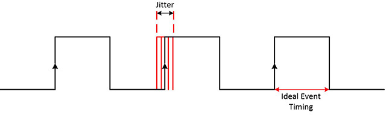

Palabras clave: fuente de reloj, desviación de reloj (skew), jitter de reloj, tiempo de transición del reloj, latencia del reloj, árbol de reloj, reloj de doble flanco
Casi cualquier diseño digital ligeramente complejo depende del reloj. El reloj es también la base de toda la lógica secuencial. Anteriormente, al presentar el tiempo de setup y el tiempo de hold, también se mencionó el concepto de skew del reloj. A continuación se resumirán los conocimientos relacionados con el reloj para poder realizar mejor el diseño digital.
Fuente de reloj
Según la posición de la fuente de reloj en el módulo de diseño digital, la fuente de reloj se puede dividir en fuente de reloj externa e interna.
Fuente de reloj externa:
Circuito oscilador RC/LC: utiliza un circuito de retroalimentación positiva o negativa para generar una señal de reloj periódica. Este tipo de fuente de reloj tiene un circuito simple y un amplio rango de frecuencia, pero su frecuencia de funcionamiento es baja y su estabilidad no es alta.
Oscilador de cristal pasivo/activo: utiliza el efecto piezoeléctrico del cristal de cuarzo (la presión y la señal eléctrica pueden convertirse mutuamente) para generar una señal de resonancia. Este tipo de fuente de reloj tiene alta precisión de frecuencia, buena estabilidad, bajo ruido y pequeña deriva térmica. En los osciladores de cristal activos, a menudo se añade control por voltaje o compensación de temperatura, y la fase y la frecuencia del reloj tienen buenas características. Sin embargo, el circuito es relativamente complejo, el ancho de banda es estrecho y la frecuencia básicamente no se puede ajustar.

Al depurar circuitos específicos, a menudo también se utilizan circuitos específicos construidos (por ejemplo, disparadores Schmitt) o fuentes de reloj generadas por dispositivos generadores de señales.
Fuente de reloj interna:
Bucle de enganche de fase (PLL, Phase Locked Loop):
Utiliza la señal de referencia de entrada externa para controlar la frecuencia y la fase de la señal de oscilación interna del bucle, logrando el seguimiento automático de la frecuencia de salida respecto a la frecuencia de entrada. A través de la trayectoria de retroalimentación, la señal se multiplica a una frecuencia fija más alta.
En general, los osciladores de cristal no pueden alcanzar frecuencias muy altas debido a razones de proceso y costo. Con el circuito PLL se puede lograr un reloj estable y de alta frecuencia. La integración del PLL dentro del módulo de diseño puede garantizar que el circuito digital tenga buena latencia y estabilidad.
División de frecuencia del reloj:Algunos módulos funcionan a una frecuencia menor que la del reloj del sistema; en este caso, se necesita dividir la frecuencia del reloj del sistema para obtener un reloj de menor frecuencia.
Contar y generar la señal de reloj dentro de un bloque always es un método común para los divisores de frecuencia. La lógica de implementación de cualquier relación de división se detalla en la siguiente sección «5.3 División de frecuencia del reloj».
Conmutación de reloj:La frecuencia de funcionamiento del sistema o de algunos módulos a veces cambia en condiciones específicas, por ejemplo, en el modo de bajo consumo se necesita reducir la frecuencia, y al aumentar la capacidad de cómputo se necesita aumentarla. En este caso, el sistema suele tener múltiples fuentes de reloj para realizar la conmutación de reloj cuando sea necesario.
Si la lógica de conmutación de reloj no se optimiza, durante el tiempo de transición de la conmutación es muy probable que aparezcan perturbaciones de pulsos espurios (glitches), lo que afecta negativamente al circuito. Para una lógica de conmutación segura, consulte el capítulo posterior: «5.4 Conmutación de reloj».
Los sistemas digitales suelen adoptar un esquema de entrada de cristal externo y multiplicación de frecuencia mediante PLL interno. Luego, según los requisitos de diseño, se realiza la división de frecuencia o la conmutación de reloj.
Características del reloj
Durante la simulación, todos los relojes síncronos son ideales: la conmutación del reloj se realiza instantáneamente, los flancos de reloj entre módulos están alineados, sin retardo y sin jitter. En los circuitos reales, el reloj tiene retardo durante la transmisión y la conmutación. Un diseño digital perfecto también debe considerar estas características no ideales del reloj; de lo contrario, puede provocar que la sincronización del diseño no cumpla los requisitos.
A continuación se explican brevemente algunas características del reloj.
Desviación del reloj (skew)
Debido al retardo de la red, cuando la señal de reloj llega a los puertos de los flip-flops, no se puede garantizar que los flancos de reloj en los diferentes puertos estén alineados, es decir, existe una diferencia de fase entre los puertos de los flip-flops. Esta diferencia se denomina skew del reloj. El diagrama esquemático es el siguiente:

En general, el skew del reloj no tiene una relación directa con la frecuencia del reloj, sino que está relacionado con factores como la longitud de las pistas, la capacitancia de carga y la cantidad de cargas.
Jitter del reloj
En comparación con el flanco de reloj ideal, el desplazamiento en el reloj real que no se acumula con el tiempo, a veces adelantado y a veces retrasado, se denomina jitter del reloj. El jitter del reloj se puede describir cuantitativamente mediante la frecuencia de jitter y la amplitud de jitter. En el diseño digital, el jitter del reloj se describe en unidades de tiempo. El diagrama esquemático es el siguiente.

El jitter del reloj se puede dividir en jitter aleatorio y jitter fijo.
Las fuentes del jitter aleatorio son el ruido térmico, el proceso de semiconductores, etc.
Las fuentes del jitter fijo son las fuentes de alimentación conmutadas, la interferencia electromagnética u otras rutas y disposiciones (layout) irracionales, etc.
En la herramienta de síntesis Design Compiler, el skew y el jitter del reloj se representan de manera unificada mediante la incertidumbre (uncertainty).
Tiempo de transición (transition)
Cuando el reloj transita del flanco ascendente al descendente, o del descendente al ascendente, el cambio de nivel no es vertical (de arriba a abajo) sin necesidad de tiempo, sino que tiene forma de rampa y requiere un tiempo de transición para completar el cambio de nivel. Este tiempo de transición se denomina tiempo de transición del reloj. El diagrama esquemático es el siguiente.

El tiempo de transición está relacionado con el proceso de la biblioteca de celdas, la carga capacitiva, etc.
Latencia del reloj (latency)
El tiempo de retardo desde que el reloj sale de la fuente (por ejemplo, oscilador de cristal, PLL o salida del divisor) hasta que llega al puerto del flip-flop se denomina latencia del reloj. La latencia del reloj incluye la latencia de la fuente (source latency) y la latencia de la red (network latency), como se muestra en la siguiente figura.

La latencia de la fuente de reloj es el tiempo de transmisión de la señal de reloj desde el origen real del reloj hasta el punto de definición del reloj en el módulo de diseño. En la figura anterior es de 3 ns.
La latencia de la red de reloj es el tiempo de transmisión desde el punto de definición del reloj del módulo de diseño hasta el terminal de reloj del flip-flop dentro del módulo; la ruta de transmisión puede pasar por buffers. En la figura anterior es de 1 ns.
La latencia de la fuente (source latency) es un retardo común a todos los flip-flops dentro del módulo de diseño, por lo que no afecta el skew del reloj.
Árbol de reloj
En el diseño digital, cada módulo debe usar circuitos de reloj síncronos. En un circuito síncrono, los flip-flops impulsados por la misma señal de reloj forman juntos un dominio de reloj. En un circuito ideal, la señal de reloj llega simultáneamente a los terminales de reloj de todos los flip-flops del mismo dominio. Sin embargo, en la práctica, debido a la existencia de diversos retardos, es difícil lograr esta característica de reloj sin retardo. Además, la capacidad de excitación de la señal de reloj es limitada y difícilmente puede proporcionar un fan-out efectivo de forma independiente para un dominio de reloj con muchos flip-flops. Para resolver los problemas de retardo y excitación del reloj, es necesario utilizar un sistema de árbol de reloj para gestionar la señal de reloj, garantizando así un buen tiempo y capacidad de excitación.
El árbol de reloj es una estructura en red formada por muchas celdas de buffer (buffer cell) equilibradas. Generalmente se construye desde un punto de origen del reloj, pasando por niveles de celdas buffer. La estructura real del árbol de reloj con buffers de reloj (módulos triangulares naranjas en la figura) se muestra a continuación.

El árbol de reloj no se utiliza para reducir el tiempo de llegada de la señal de reloj a cada flip-flop, sino para reducir la diferencia de tiempo entre las llegadas a los diversos flip-flops. Generalmente, los diseñadores de backend completan el diseño del árbol de reloj insertando buffers de reloj. Los diseñadores de frontend a menudo deben garantizar la corrección funcional del esquema de reloj y la lógica digital.
Otras clasificaciones del reloj:
Reloj síncrono y asíncrono
«4.1 Síncrono y asíncrono»Se explica en detalle. Cuando los relojes provienen de la misma fuente y cumplen una relación de múltiplo entero, generalmente se pueden considerar síncronos. En el diseño digital, la definición de reloj síncrono es bastante amplia. La lógica dentro del mismo dominio de reloj no requiere tratamiento de sincronización.
A continuación, se entiende el concepto de reloj síncrono desde la perspectiva de los circuitos síncronos.
Un circuito síncrono es un circuito compuesto por lógica secuencial y lógica combinacional. La característica de un circuito síncrono es que los terminales de reloj de todos los flip-flops están conectados juntos y al terminal de reloj del sistema. Solo cuando llega el pulso de reloj, el estado del circuito puede cambiar. El estado cambiado se mantiene hasta la llegada del siguiente pulso de reloj. Durante este período, independientemente de si la entrada externa x cambia o no, cada estado en la tabla de estados es estable.
Reloj de compuerta (gated clock)
El principio básico del reloj de compuerta: cuando la señal de habilitación está activa, se abre el reloj; cuando la señal de habilitación está inactiva, se cierra el reloj.

Dado que el reloj de compuerta puede apagar el reloj de trabajo en el momento adecuado, tiene una amplia aplicación en el diseño de bajo consumo. La lógica más simple del reloj de compuerta es realizar una operación AND entre la señal de habilitación y la señal de reloj, pero esto no es seguro y es propenso a glitches. Para una introducción detallada al reloj de compuerta, consulte «6.4 Diseño de bajo consumo a nivel RTL (parte 2)».
Reloj de doble flanco
Algunos módulos pueden transferir datos tanto en el flanco ascendente como en el descendente del reloj, logrando así duplicar la velocidad de datos.
DDR (Double Data Rate) SDRAM es un ejemplo típico de transmisión de datos en ambos flancos.
El diagrama esquemático de la transmisión de datos DDR típica es el siguiente.

A continuación se realiza una simulación simple del comportamiento de transmisión de datos en ambos flancos del reloj.
La idea básica de diseño es leer los datos utilizando ambos flancos del reloj y luego seleccionar la salida de datos mediante una señal de selección de chip (chip select) opuesta al reloj, completando así la transmisión de datos en ambos flancos del reloj.
El código Verilog se describe a continuación.
Ejemplo
input rstn ,
input clk,
input csn,
input [7:0] din,
input din_en,
output [7:0] dout,
output dout_en);
//capture at posedge
reg [7:0] datap_r ;
reg datap_en_r ;
always @(posedge clk or negedge rstn) begin
if (!rstn) begin
datap_r <= 'b0 ;
datap_en_r <= 1'b0 ;
end
else if (din_en) begin
datap_r <= din ;
datap_en_r <= 1'b1 ;
end
else begin
datap_en_r <= 1'b0 ;
end
end
//capture at negedge
reg [7:0] datan_r ;
reg datan_en_r ;
always @(negedge clk or negedge rstn) begin
if (!rstn) begin
datan_r <= 'b0 ;
datan_en_r <= 1'b0 ;
end
else if (din_en) begin
datan_r <= din ;
datan_en_r <= 1'b1 ;
end
else begin
datan_en_r <= 1'b0 ;
end
end
assign dout = !csn ? datap_r : datan_r ;
assign dout_en = datan_en_r | datap_en_r ;
endmodule
El testbench se describe a continuación; el módulo de transmisión de datos de doble flanco tiene una frecuencia de reloj de 100 MHz, pero la velocidad de los datos de entrada es de 200 MHz.
Ejemplo
module test ;
reg clk_100mhz, clk_200mhz ;
reg rstn ;
reg csn ;
reg [7:0] din ;
reg din_en ;
wire [7:0] dout ;
wire dout_en ;
always #(2.5) clk_200mhz = ~clk_200mhz ;
always @(posedge clk_200mhz)
clk_100mhz = ~clk_100mhz ;
initial begin
clk_100mhz = 0 ;
clk_200mhz = 0 ;
rstn = 0 ;
din = 0 ;
din_en = 0 ;
csn = 0 ;
//start work
#11 rstn = 1 ;
@(negedge clk_100mhz) ;
din_en = 1 ;
#0.2 ;
csn = 1 ; //Cuando csn=1, se emite el dato capturado en el flanco descendente
//generate csn
forever begin
@(posedge clk_100mhz) ;
#0.2 ; //Añadir un pequeño retraso para asegurar una correcta adquisición de datos
csn = 0 ; //Cuando csn=0, se emiten los datos muestreados en el flanco de subida
@(negedge clk_100mhz) ;
#0.2 ;
csn = 1 ; //Cuando csn=1, se emiten los datos muestreados en el flanco de bajada
end
end
always @(negedge clk_200mhz) begin
din <= {$random()} % 8'hFF ; //Generar datos aleatorios para la transmisión
end
double_rate u_double_rate(
.rstn (rstn),
.clk (clk_100mhz),
.csn (csn),
.din (din),
.din_en (din_en),
.dout (dout),
.dout_en (dout_en));
initial begin
forever begin
#100;
if ($time >= 10000) $finish ;
end
end
endmodule // test
Los resultados de simulación de los primeros datos son los siguientes.
Como se observa en la figura, la transmisión de datos es normal y la velocidad es el doble de la frecuencia del reloj.

Esta vez solo se realiza una simulación simple de transmisión de datos en los dos flancos del reloj, no se simula el principio de funcionamiento de DDR. El principio de funcionamiento de DDR con transmisión de datos a doble velocidad es mucho más complejo que esta simulación.
Sin embargo, en general, no se recomienda usar lógica de doble flanco de reloj, principalmente por las siguientes razones.
En un bloque always, no se pueden usar simultáneamente el flanco de subida y el de bajada como lista de sensibilidad, ni se puede asignar un valor a la misma variable en dos bloques always. Por ejemplo, la siguiente descripción es incorrecta. Aunque la compilación RTL puede no reportar errores, no se puede sintetizar en un circuito real. Esto dificulta la comunicación entre señales.
always @(posedge clk or negedge clk) begin
La velocidad de transmisión de datos es el doble de la frecuencia del reloj de datos. Si se usa lógica de flanco de subida y bajada para el modelado RTL, también se necesita una señal de selección de chip cuya conmutación coincida con el reloj; si no se usa la señal de selección de chip, se debe introducir en el módulo una señal de reloj de la misma fuente con el doble de la frecuencia del reloj de datos, para poder seleccionar los datos correctamente.
Al usar lógica de doble flanco de reloj, es necesario realizar restricciones razonables tanto para el flanco de subida como para el de bajada. Las restricciones de reloj se vuelven complejas, los requisitos de ubicación y enrutamiento son más estrictos y la depuración es más difícil.
Diseñar con doble flanco de reloj requiere una alta calidad del reloj, y también se deben considerar muchos factores al diseñar el árbol de reloj.
Haz clic para compartir notas
<p style="font-size:14px;">¡Las notas deben ser una extensión del contenido de este artículo!</p><br> <p style="font-size:12px;"><a href="../tougao.html" target="_blank">Para enviar un artículo, haz clic aquí</a></p> <p style="font-size:14px;"><a href="./runoob-user-test-intro.html" target="_blank">Cómo obtener el código de invitación de registro</a></p> <h3 class="text-muted"><i class="fa fa-info-circle" aria-hidden="true"></i> Antes de compartir notas, debes <a href=".." class="runoob-pop">iniciar sesión</a>.</h3> <p><a href="./runoob-user-test-intro.html" target="_blank">Cómo obtener el código de invitación de registro</a></p>